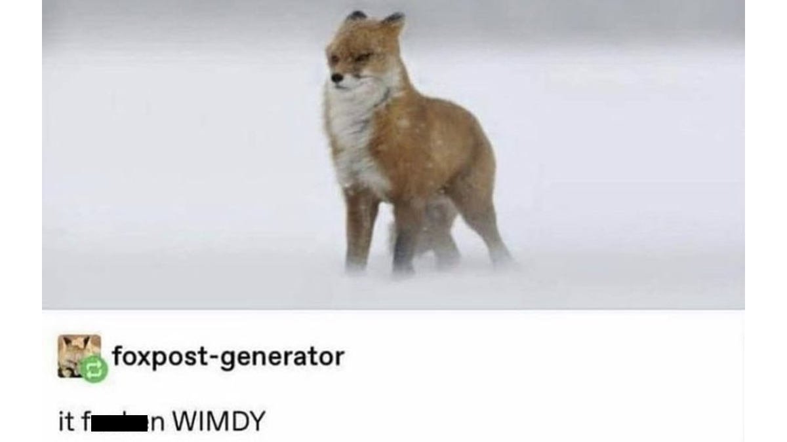

Kurssilista
- Liiketalouden matematiikan perusteet
- Ohjelmoinnin perusteet
- Olio-ohjelmoinnin perusteet
- Työvälineosaaminen
- Webteknologiat
Kurssien tiedot
Liiketalouden matematiikan perusteet
Liketalouden matematiikan perusteet -kurssi on enemmänkin kertauskurssi. Kerrattiin 7-luokan matikkaa.
Ohjelmoinnin perusteet
Opiskelija osaa
- suunnittella ja toteuttaa pienehköjä ohjelmia itsenäisesti:
- jakaa ohjelman erikseen toteuttavissa oleviin osiin tarkoituksen mukaisesti sekä suunnitella ja toteuttaa
yksinkertaiset tietorakenteet ja algoritmit.
- arvioida toisen kirjoittamaa ohjelman rakennetta
Työvälineosaaminen
Opiskelija osaa
- hyödyntää opinnoissaan keskeisimpiä toimistosovelluksia
- hyödyntää pilvipalveluita osana ryhmätyöskentelyä
- toimia verkko-opiskeluympäristössä
Olio-ohjelmoinnin perusteet
Opiskelija osaa
- osaa soveltaa olio-ohjelmoinnin perusrakenteita,
- osaa ohjelmoida itsenäisesti pieniä olio-ohjelmia,
- pystyy soveltamaan oppimaansa myös muissa oliokielissä,
- tuntee abstraktien tietotyyppien perusteet
- tuntee UML:n peruskäsitteet.
Webteknologiat
Opiskelija
- hallitsee web front end -kehittäjän työkalupakkiin kuuluvat tekniikat.
- osaa suunnitella ja toteuttaa eri päätelaitteille mukautuvan web-sivuston.
- osaa hyödyntää valmiita käyttöliittymäkehyksiä ja lisäosia.
- tuntee web-ohjelmoinnissa käytettävien ohjelmointikielten merkityksen selaimessa toimivan sovelluksen
toteutuksessa.

Lisätietoja
| Kurssi | Opintopisteiden määrä | Arvosana |
|---|---|---|
| Liiketalouden matematiikan perusteet | 3 | Hyväksytty |
| Ohjelmoinnin perusteet | 5 | 4 |
| Olio-ohjelmoinnin perusteet | 5 | Odottaa |
| Työvälineosaaminen | 5 | 5 |
| Webteknologiat | 5 | Kesken |